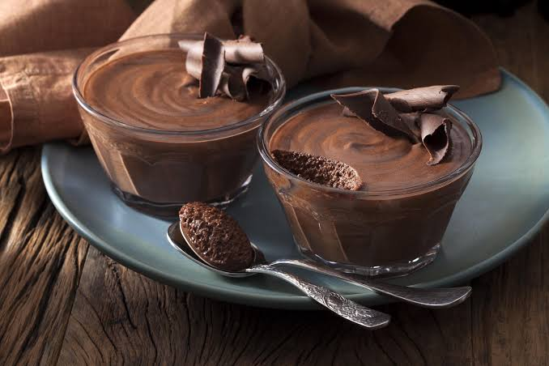
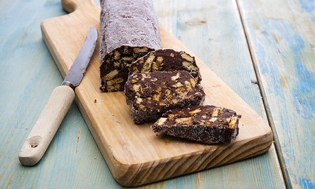
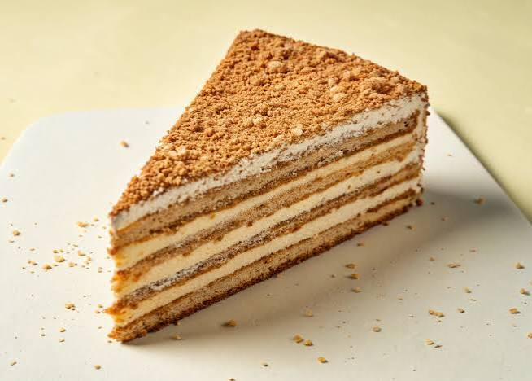
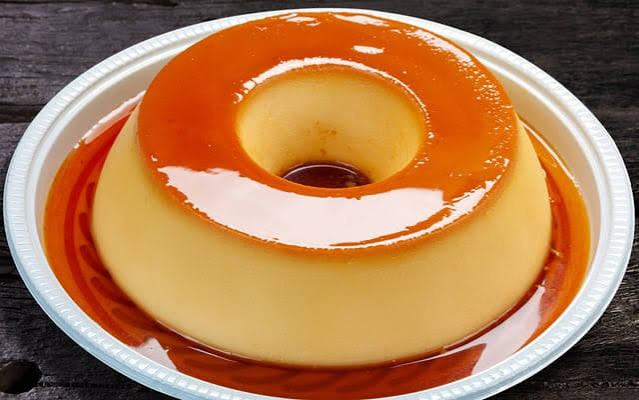
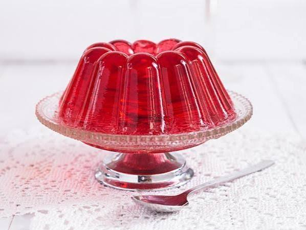
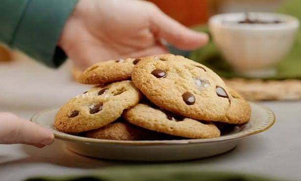

Sobremesas
Aqui estão algumas doces ideias
Escolha a sua próxima sobremesa
Mousse de chocolate
- bater as gemas dos ovos com açúcar
- derreter chocolate e juntar á mistura
- bater as claras em castelo e envolver na misturar anterior
- colocar a mousse no frigorifico e servir

Salame de chocolate
- bater manteiga, açúcar e ovos numa taça
- adicionar chocolate em pó e misturar
- triturara bolachas e envolver na mistura
- dar a forma de salame e levar ao frigorífico
- cortar e servir

Bolo de bolacha
- bater manteiga com açúcar e adicionar gemas de ovos e baunilha
- tirar um café e mergulhar as bolachas
- criar camadas de creme de manteiga e bolachas
- refrigerar e servir

Pudim
- com açúcar e água preparar caramelo
- numa tigela misturar açúcar,ovos,raspa de limão e leite
- verter para uma forma untada com o caramelo
- cozinhar em banho maria deixar arrefecer e servir

Gelatina
- dissolver um pacote de gelatina em 250 ml de água a ferver
- adicionar 250 ml de água fria
- refrigerar durante 2-3 horas
- servir

Bolacha
- juntar manteiga açúcar e ovos
- incorporar farinha
- estender a massa e cortar em formas diversas
- levar ao forno
- servir

voltar para o inicio